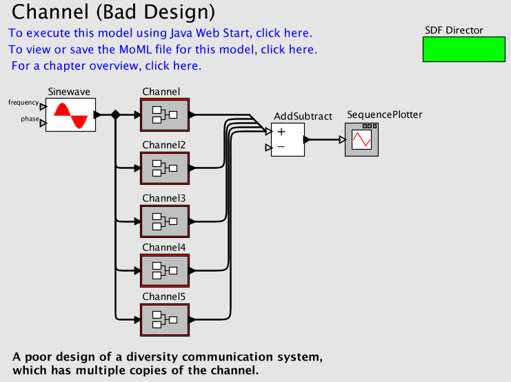

Your browser does not support JavaScript so moving the mouse over the actors will not display their parameters. To enable JavaScript, consult the security preferences of your browser.
See
http://support.microsoft.com/gp/howtoscript
for details.